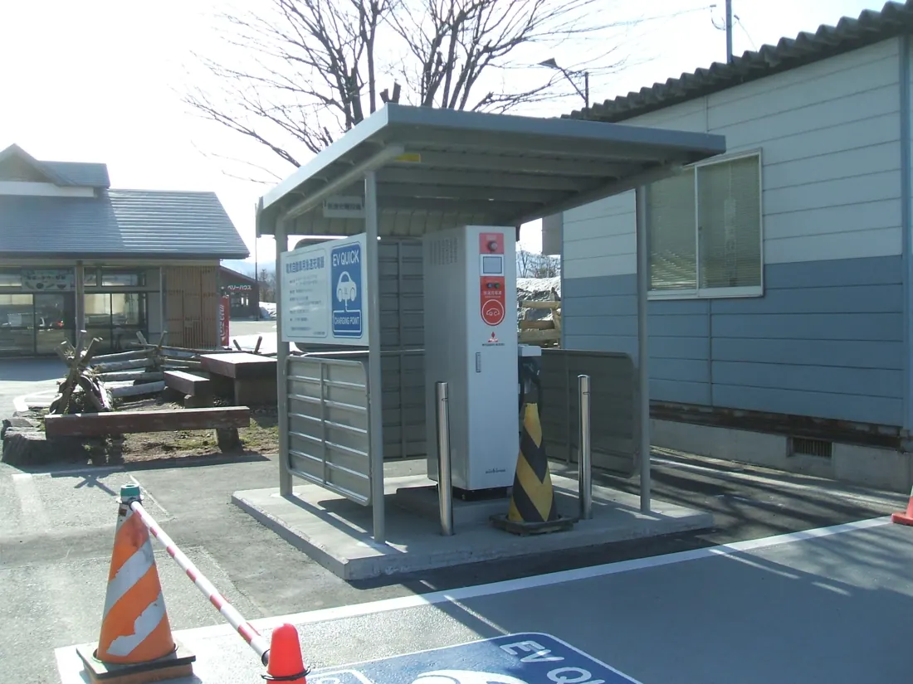

01地域・交通の参考写真写真の出典
DY5W-sport · 2013-03-28
原典 · CC BY-SA 3.0
MDLが縮小・WebP化。表示枠で切り抜き。色変更なし。加工写真にも同じCC BY-SAライセンスを適用。
電動モビリティ地域共創コンソーシアム
大学との接点を、無料の入口から。
無料入会費・年会費
- 法人・個人
- 入会費・年会費とも無料
現行ページ
現行の公式入会ページを確認。無料の期限は記載なし。
仕組み・出典を読む
- 01 参加の入口
- 講演会、共同研究の相談、学生と企業の接点づくり。法人・個人が参加できる。
- 02 基礎運営の財源
- 入会窓口は飯豊町商工観光課。基礎運営費の金額・財源構成は未確認。
- 03 個別案件の費用
- 共同研究の相談を後押し。個別研究の費用負担や契約条件は入会案内では未確認。
議論へのヒント · MDLの整理
入口の無料化と、共同研究そのものの費用は分けて確認する。
税の扱い：無料
一次資料
- 公式入会案内 入会費・年会費／参加メリット／申込先